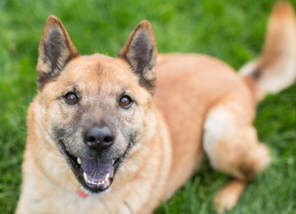

ADOPT



ABOUT US
Providing care for those who can't
Oxford Lafayette Humane Society provides shelter and care to approximately 4,500 animals each year. In 2011, 4,362 animals were surrendered to OLHS. Of these, 51% were surrendered as strays, 43% were surrendered by their owners, and 6% were seized by Animal Control. Each of these animals is surrendered with their own story and requires personalized care to ensure their well-being. The dedicated shelter staff and volunteers work around the clock every day of the year to keep all of our animals as comfortable and healthy as possible, with the ultimate goal of finding new, responsible pet owners to provide loving, permanent homes.The Oxford Lafayette Humane Society is a private, nonprofit organization that relies on donations from our generous supporters, membership dues, and community fundraising. We are not operated or funded by any national humane groups and must rely on contributions from people like you to bring our services to the community. Donations made to national animal welfare groups do not benefit our local organization or our animals. All financial contributions and in-kind donations are tax deductible.
Contact / Hours
Main Office: (662) 236-7631
Animal Control: (662) 832-7633
Adoptions: (662) 801-6788
Lafayette Humane Society
413 McElroy Drive, Oxford, MS 38655, US
Hours
Monday: 12-5 pm
Tuesday: 12-5 pm
Wednesday: Closed
Thursday: 12-5 pm
Friday: 12-5 pm
Saturday: 12-5 pm
Sunday: Closed